MIPI 协议技术报告
01概述 overview
MIPI Alliance（Mobile Industry Processor Interface Alliance）制定的移动设备内部互连接口规范族中，DSI（Display Serial Interface）定义 host processor 与显示模组（peripheral）之间的协议与信号时序关系。DSI 是协议层规范，物理层由 D-PHY 提供。
MIPI 协议族定位
| 规范 | 定位（一句话） |
|---|---|
DSI | 显示屏串行接口协议层规范：host→peripheral 半双工双向，传像素流与命令。 |
CSI-2 | 摄像头串行接口：HS 单向、数据方向 peripheral→host，控制走 I2C 旁路。 |
DPI-2 | 并行像素接口（Display Pixel Interface），Video Mode 的像素格式取自它。 |
DBI-2 | 并行命令接口（Display Bus Interface），legacy 接口，不在 DSI 范围内。 |
DCS | Display Command Set，Command Mode 的命令集来源。 |
D-PHY | 源同步高速低功耗物理层：1 Clock Lane + N Data Lane，HS/LP 两种模式。 |
C-PHY | 三线嵌入式时钟物理层（本报告不涉及）。 |
M-PHY | 面向更高速通用场景的另一物理层（本报告不涉及）。 |
本报告依据
- DSI v1.1：Version 1.1（2011-11-22），MIPI Board Approved 2012-03-14，首页标注发布日期 2012-04-06。
- D-PHY v2.0：Version 2.0（2015-11-23），MIPI Board Adopted 2016-03-08，是首个 Board adopted 的 v2.0 release。
DSI 版本历史
| 日期 | 版本 | 主要变更 |
|---|---|---|
| 2006-04-19 | v1.00a | 首个 MIPI Board 批准发布。 |
| 2008-02-21 | v1.01.00 | 大改：新增系统上电初始化、EoTp、Short Write、DCS Write、Generic Read / Long Write、Color Mode Command、ECC 要求。 |
| 2010-06-28 | v1.02.00 | 新增 30bpp / 36bpp 像素格式、隔行视频 VC 用法澄清、可上报错误更新。 |
| 2012-04-06 | v1.1 | 新增立体显示格式（SDF）支持：帧首 VSS 短包可携带 3D Control payload（Data 0 bit3=1 表示存在，Data 1 内含 3DMODE[1:0]、3DFMT[1:0]、3DVSYNC、3DL/R）。 |
两种基本工作模式
- Command Mode：transaction 以向带 display controller（含本地寄存器与 frame buffer）的 peripheral 发命令/参数为主，host 可读写寄存器与 frame memory。要求双向接口。
- Video Mode：host→peripheral 为实时像素流，只能用 HS mode 传视频；仅 Video Mode 的系统可用单向数据路径。部分模组带 timing controller + 局部 frame buffer，可低功耗自刷新。
Virtual Channel（VC）
DI 字节的 DI[7:6] 两位标识虚拟通道，最多 4 个，以 packet 为单位交织服务多个外设。典型用法：多 driver IC 拼大屏、一路 Command + 一路 Video、隔行视频两个 field 各用一个 VC（建议第一 field VC=0b00、第二 field VC=0b01）。
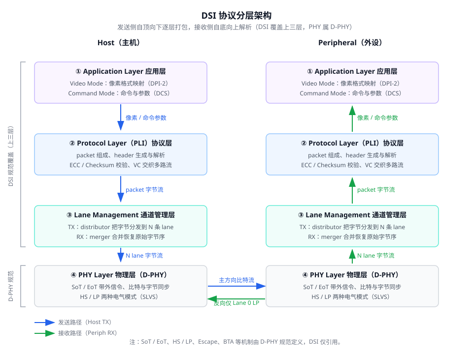
02链路架构 link
一条 Link = 1 条 Clock Lane + 1~4 条 Data Lane；最少 4 根线，N 条 Data Lane 需要 2×(N+1) 根线。每条 Lane 由两侧 Lane Module 经 Dp/Dn 两线点对点互连。
方向与驱动规则
- HS 单向：仅 Forward 方向（Forward = 时钟方向 = host→peripheral）；反向 HS 带宽为正向 1/4（Slave 比特周期 = 4·UIINST），且为可选能力。
- LP 可双向：方向控制用令牌传递（token passing，即 BTA）。
- 反向只用 Lane 0 的 LP Mode：前向 LP 传输也只能用 Lane 0；多 lane 系统反向同样只用 Lane 0。所有 Trigger message 走 Lane 0。
- Clock Lane 永远由 host 驱动（Forward），仅支持 Stop / HS 时钟发送 / ULPS 三种主状态，无常规 Escape mode。
- Master/Slave 身份不因 Turnaround 改变；高频时钟由 PHY 外部 Clock Multiplier Unit（PLL）产生。
Lane Module 组成与 CIL 类型
Lane Module 内含 HS-TX/HS-RX（差分高速收发）、LP-TX/LP-RX/LP-CD（低功耗收发与竞争检测）、CIL（Control and Interface Logic，与协议层 PPI 对接）。含 HS-TX 必含 LP-TX，含 HS-RX 必含 LP-RX；LP-RX 上电即常开监听；LP-CD 仅双向 Lane 需要。
| CIL 代码 | 模块组成 | 用途 |
|---|---|---|
CIL-MFAA | HS-TX, LP-TX, LP-RX, LP-CD | Command Mode host 的 Data Lane（双向） |
CIL-SFAA | HS-RX, LP-RX, LP-TX, LP-CD | Command Mode peripheral 的 Data Lane（双向） |
CIL-MFAN | HS-TX, LP-TX | Video Mode host 的 Data Lane（单向） |
CIL-SFAN | HS-RX, LP-RX | Video Mode peripheral 的 Data Lane（单向） |
CIL-MCNN | HS-TX, LP-TX | host 侧 Clock Lane |
CIL-SCNN | HS-RX, LP-RX | peripheral 侧 Clock Lane |
D-PHY 侧命名规律：MFXN/SFXN 为单向 Data Lane，MFXY/SFXY 为双向 Data Lane（无 HS 反向），MRXX/SRXX 为含 HS 反向的双向 Lane，MCNN/SCNN 为 Clock Lane（仅支持 ULPS）。
Command / Video Mode 对 Lane 的最低要求
- Command Mode：Data Lane 0 必须双向（支持反向 Escape Mode：LPDT、ACK、TE Trigger），其余 lane 必须单向。
- Video Mode：Lane 0 可双向可单向，其余单向。
- 所有 Data Lane 必须支持 Forward HS 与 Forward Escape（至少 ULPS + Trigger）；反向 Escape、反向 HS、LPDT 均为可选。
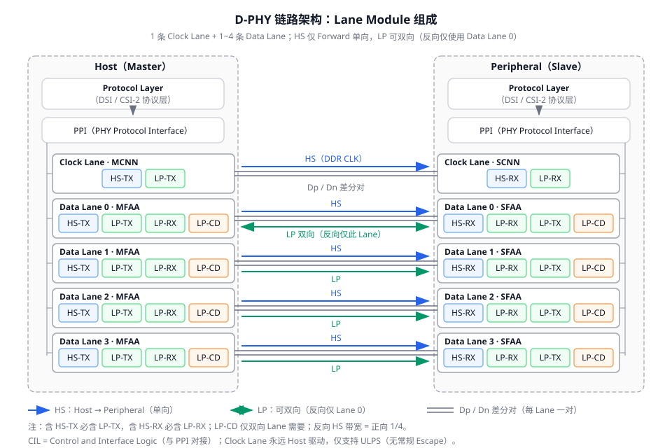
多 Lane 分发与合并（Lane Distributor / Merger）
- 发送端 Lane Distributor 缓冲 N 字节（N = lane 数），按 round-robin 并行发出：2 lane 时 byte0→Lane0、byte1→Lane1、byte2→Lane0……接收端 merger 合并恢复原始字节序。
- 所有 lane 同时并行执行 SoT；但各 lane 独立结束——总字节数不是 lane 数整数倍时，先耗尽数据的 lane 提前一个字节发 EoT 进入 LPS；末尾不足 N 字节时 Lane Management layer 对无数据的 lane 撤销 valid data。
- Lane 数为静态参数，设计/初始配置时固定，不得动态改变；N-lane 能力的 host 必须能用 1…N 中任意 lane 数工作；多 lane 共用单一公共 clock。
- PHY 层只规定每条 Lane payload 为整数字节（≥1）、LSB 先传、不支持数据节流；字节如何在 Lane 间分配属上层协议（DSI 的 PHY Adapter）。
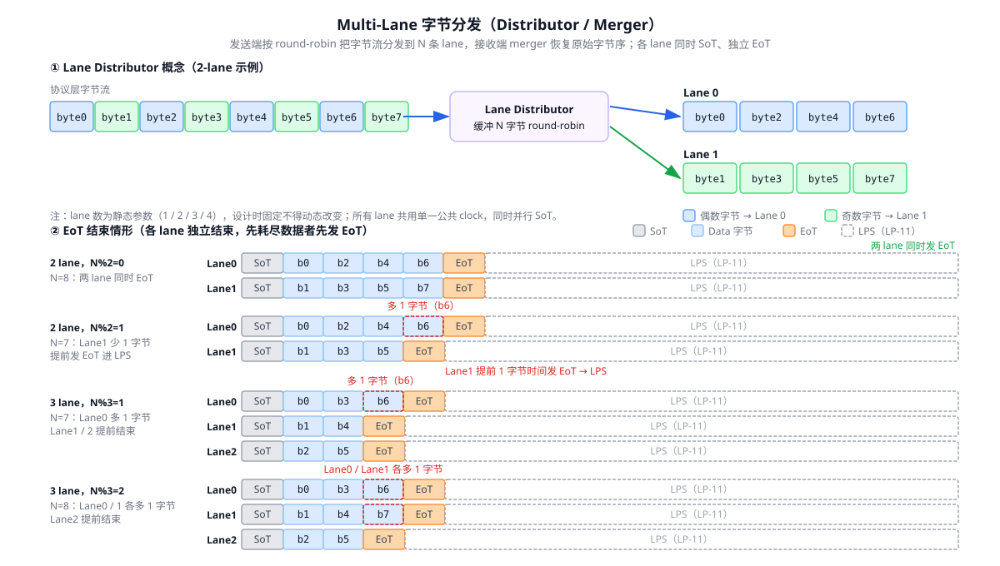
03D-PHY 线状态与模式 phy-state
D-PHY 每条 Lane 在任意时刻处于 HS 差分状态或四种 LP 单端状态之一。三种工作模式——Burst（HS）、Control、Escape——用同一组线状态编码表达不同含义。
Lane 状态编码（Table 2）
| 状态码 | Dp 电平 | Dn 电平 | HS Burst Mode | Control Mode | Escape Mode |
|---|---|---|---|---|---|
HS-0 | HS Low | HS High | Differential-0 | N/A | N/A |
HS-1 | HS High | HS Low | Differential-1 | N/A | N/A |
LP-00 | LP Low | LP Low | N/A | Bridge | Space |
LP-01 | LP Low | LP High | N/A | HS-Rqst | Mark-0 |
LP-10 | LP High | LP Low | N/A | LP-Rqst | Mark-1 |
LP-11 | LP High | LP High | N/A | Stop | N/A（出现即返回 Control Stop） |
- HS 传输期间，LP 接收器始终把差分 HS 状态看作
LP-00。 - Stop（LP-11）的中心地位：线上出现 Stop 达到最小要求时间，PHY 状态机无论之前处于何状态都必须回到 Stop。
- 所有 LP 状态持续期
TLPX ≥ 50 ns；对Dp ⊕ Dn做异或可重建 LP 时钟（Escape mode 不依赖 Clock Lane 的原因）。
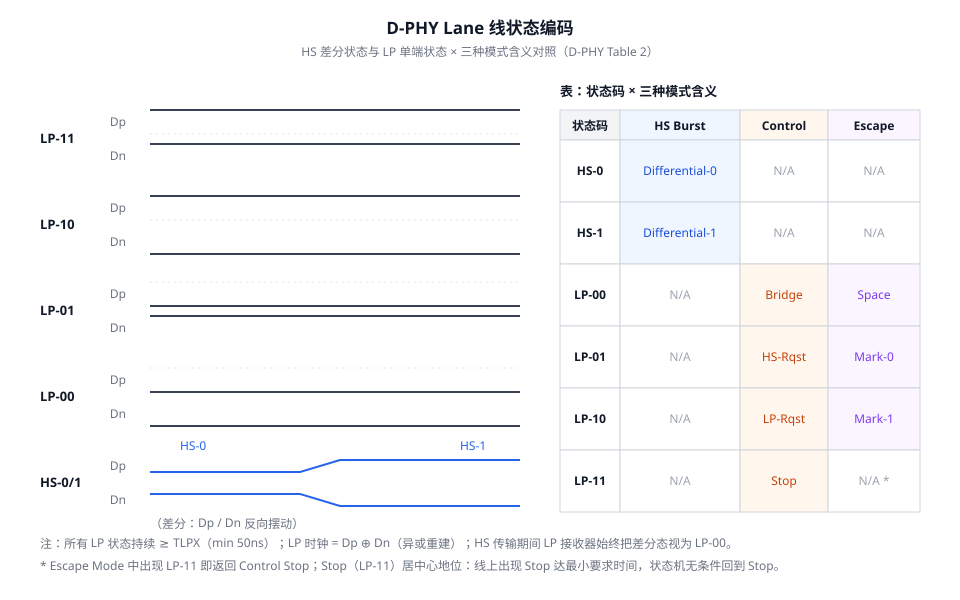
三种请求序列（Control mode 下从 Stop 出发）
| 请求 | 线状态序列 | 说明 |
|---|---|---|
| 进入 HS | LP-11 → LP-01 → LP-00 | HS-Rqst → Bridge，随后进入 HS 模式，直到收到 LP-11。 |
| 进入 Escape | LP-11 → LP-10 → LP-00 → LP-01 → LP-00 | LP-Rqst → … → 最终 Bridge 后进入 Escape（Space 态），随后必须发 8-bit entry command。 |
| Turnaround | LP-11 → LP-10 → LP-00 → LP-10 → LP-00 | 用于双向 Lane 的总线方向翻转（BTA）。 |
任一序列中若在最终 Bridge 前检测到 LP-11，则中止并回到/等待 Stop。
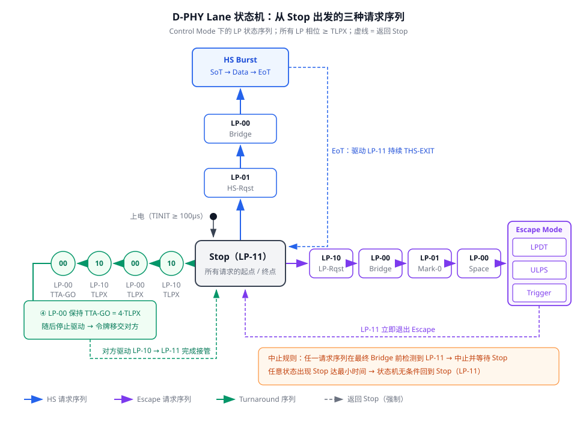
04D-PHY 传输流程 phy-xfer
HS 数据速率档位（v2.0 核心扩展）
| 速率档位 | 能力要求 |
|---|---|
| 80 Mbps ~ 1.5 Gbps/lane | 基础范围，无需 deskew；UIINST max = 12.5 ns（对应最低 80 Mbps），ΔUI = ±10%。 |
| ≤ 2.5 Gbps/lane | >1.5 Gbps 必须支持 deskew 校准。 |
| ≤ 4.5 Gbps/lane | >2.5 Gbps 必须支持均衡（de-emphasis）且 SSC 必须可用。 |
LP 模式最大 10 Mbps。反向 HS 速率为正向 1/4。静态 lane 间 skew：≤1.5 Gbps 时 Data Lane 与 Clock Lane 延迟差 < UI/50。
DDR 时钟与数据关系
- Clock Lane 发送 DDR（半速率）时钟，与数据成正交相位：时钟上升沿位于数据比特中心，数据在时钟上升沿和下降沿均被采样；1 个 DDR 时钟周期 = 2 个瞬时 UI。
- TX 必须保证 burst 第一个 payload bit 期间出现时钟上升沿。
- HS burst 期间 Clock Lane 必须处于 HS 模式提供 DDR 时钟；burst 载荷为整数个字节、最少 1 字节、无 PHY 级上限。
SoT / EoT 序列
SoT（TX 侧，6 步）
- 驱动 Stop（
LP-11）； - 驱动 HS-Rqst（
LP-01）持续TLPX； - 驱动 Bridge（
LP-00）持续THS-PREPARE； - 使能 HS 驱动器、关闭 LP 驱动器，驱动
HS-0持续THS-ZERO； - 在时钟上升沿插入 HS Sync 序列
00011101； - 继续发送 payload。
SoT（RX 侧）
观察 LP-11→LP-01→LP-00；经 TD-TERM-EN 使能端接；等待 THS-SETTLE 忽略过渡；搜索并锁定 Leader 序列 011101（允许任意单比特错误），之后接收 payload。
EoT（TX / RX 侧）
- TX：发完 payload 后立即翻转差分状态并保持
THS-TRAIL，然后关 HS-TX、开 LP-TX，驱动 Stop（LP-11）持续THS-EXIT。 - RX：检测线离开
LP-00进入LP-11并断开端接；用THS-SKIP忽略末段过渡比特，回溯确定最后一个有效字节。
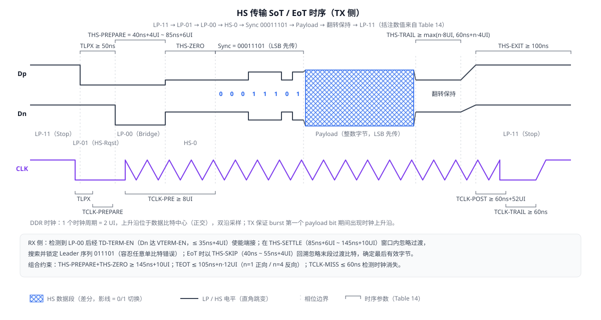
Escape Mode
- 进入序列：
LP-11 → LP-10 → LP-00 → LP-01 → LP-00，最终 Bridge 后进入 Space 态，随后 TX 必须发送 8-bit entry command。 - 位编码 Spaced-One-Hot：每个 Mark（Mark-0 =
LP-01表 0，Mark-1 =LP-10表 1）后必须跟一个 Space（LP-00）；退出前最后一个相位必须是不带 Space 的 Mark-1。时钟 =Dp ⊕ Dn，与 Clock Lane 无关。 LP-11（Stop）立即退出 Escape 回到 Control mode；不识别的命令被忽略并等待 Stop。
Escape Entry Commands（Table 8）
| 命令 | 类型 | 位模式（发送顺序） | hex（先发位 = LSB） |
|---|---|---|---|
| Low-Power Data Transmission (LPDT) | mode | 11100001 | 0x87 |
| Ultra-Low Power State (ULPS) | mode | 00011110 | 0x78 |
| Undefined-1 | mode | 10011111 | 0xF9 |
| Undefined-2 | mode | 11011110 | 0x7B |
| Reset-Trigger [Remote Application] | Trigger | 01100010 | 0x46 |
| Entry sequence for HS Test Mode | Trigger | 01011101 | 0xBA |
| Unknown-4 | Trigger | 00100001 | 0x84 |
| Unknown-5 | Trigger | 10100000 | 0x05 |
- LPDT：入口命令后跟 Spaced-One-Hot 数据，自定时、可变速率；Space 态可暂停；Mark-1 + Stop 结束。
- ULPS：发送 ULPS 命令后 Lane 进入超低功耗态，线保持 Space（
LP-00）；退出 = Mark-1 持续TWAKEUP = 1 ms+ Stop（LP-11）。 - Clock Lane ULPS：进入
LP-11 → LP-10（TX-ULPS-Rqst，TLPX）→ LP-00（TX-ULPS）；退出 Mark-1（LP-10，TX-ULPS-Exit）持续TWAKEUP = 1 ms→LP-11。Clock Lane 无常规 Escape mode，仅 ULPS。
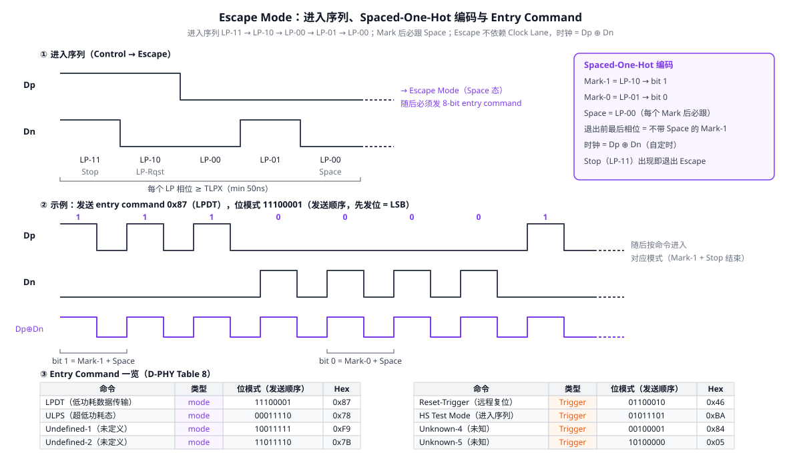
Bus Turnaround（BTA，双向 Lane）
原 TX 侧（令牌移交，6 步）
LP-11（Stop）；LP-10持续TLPX；LP-00持续TLPX；LP-10持续TLPX；LP-00（Bridge）持续TTA-GO = 4·TLPX；- 停止驱动，用 LP-RX 观察确认。
原 RX 侧（接管方）
观察到 Bridge 后等待 TTA-SURE（TLPX ~ 2·TLPX），然后驱动 LP-00 持续 TTA-GET = 5·TLPX，再驱动 LP-10 持续 TLPX，最后 LP-11 持续 TLPX 完成。
两侧 LP 时钟匹配约束：TLPX(MASTER)/TLPX(SLAVE) ∈ [2/3, 3/2]（即 host LP 时钟频率须为 peripheral 的 67% ~ 150%）；Master/Slave 身份不因 Turnaround 改变。
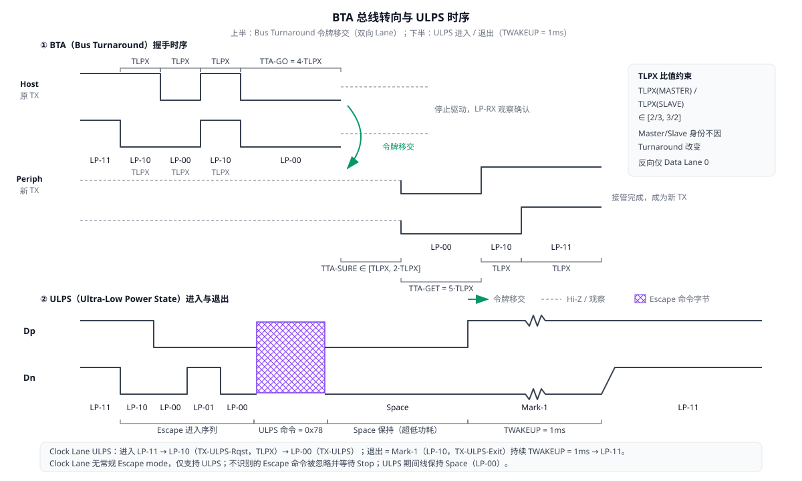
Clock Lane 启动 / 停止
- HS 时钟启动：
LP-11 → LP-01（TLPX）→ LP-00（TCLK-PREPARE）→ HS-0（TCLK-ZERO）→ DDR 时钟先跑TCLK-PRE ≥ 8 UI才允许任何 Data Lane 启动。 - HS 时钟停止：最后一个 Data Lane 转入 LP 后，时钟继续
TCLK-POST ≥ 60 ns + 52·UI并以 HS-0 结束，再驱动 HS-0 持续TCLK-TRAIL ≥ 60 ns，然后LP-11（THS-EXIT）；RX 侧以TCLK-MISS ≤ 60 ns超时检测时钟消失。 - 连续 / 非连续时钟：规范允许 Clock Lane 在两次 burst 之间回 LP（非连续时钟用法）；协议只能在所有 Data Lane 都无 HS 活动时停时钟。所有 DSI 收发器必须支持 continuous clock，non-continuous 可选，由 host 控制。
初始化 TINIT
上电后 TX 驱动 Stop（LP-11）至少 TINIT ≥ 100 µs；RX 在检测到至少 TINIT 长的 Stop 之前忽略线上一切状态。DSI 侧要求 host 在 TINIT 期间向所有 Lane 持续驱动 LP-11；peripheral 可用 ±30% 精度 R-C timer 检测；host 的 tINIT_MASTER 应编程为 > tINIT_SLAVE + tINTERNAL_DELAY。
Deskew 校准（HS Skew Calibration，>1.5 Gbps 必须）
- >1.5 Gbps 时正常 HS 传输前必须先发送 initial deskew 序列；≤1.5 Gbps 时 initial deskew 可选；periodic deskew 任何速率均可选。
- 序列结构：SoT 同普通 burst，但 Sync pattern = 全 1（
16'hFFFF），持续TSKEWCAL-SYNC = 16 UI；随后 payload 为01010101…时钟 pattern。 - 时长约束：initial
≥ 2^15 UI 且 ≤ 100 µs；periodic≥ 2^10 UI 且 ≤ 10 µs。 - 所有活跃 Lane 同时发送；RX 检测全 1 sync 后启动 clock-data deskew。从 ULPS 切回 HS 且此前已做过 initial deskew 时，deskew 可选。
版本互操作要点（Table 19）
- v2.0 TX ↔ v2.0 RX：可达 4.5 Gbps，需 deskew 初始化。
- v2.0 TX + v1.2 RX：至 1.5 Gbps 无需 deskew；至 2.5 Gbps 需 deskew 初始化。
- LP 时钟失配约束即 TLPX 比值
[2/3, 3/2]。
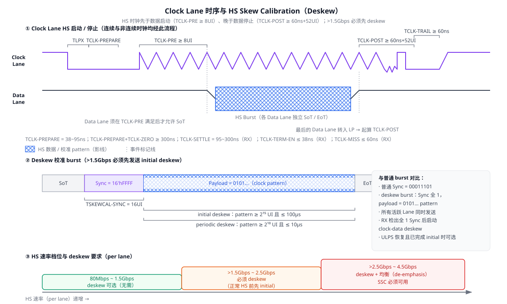
全局时序参数表（Table 14 全表）
| 参数 | 定义 | Min | Max | 单位 | 侧 |
|---|---|---|---|---|---|
TCLK-MISS | RX 检测时钟消失并关闭 HS-RX 的超时 | — | 60 | ns | RX |
TCLK-POST | 最后 Data Lane 转 LP 后 TX 继续发 HS 时钟的时间 | 60 ns + 52·UI | — | ns | TX |
TCLK-PRE | 任何 Data Lane 启动前 TX 先驱动 HS 时钟的时间 | 8 | — | UI | TX |
TCLK-PREPARE | HS 传输前驱动 Clock Lane LP-00 的时间 | 38 | 95 | ns | TX |
TCLK-SETTLE | HS RX 忽略时钟跳变的窗口 | 95 | 300 | ns | RX |
TCLK-TERM-EN | Clock Lane RX 使能端接的时间 | Dn 达 VTERM-EN | 38 | ns | RX |
TCLK-TRAIL | 最后 payload 时钟位后驱动 HS-0 的时间 | 60 | — | ns | TX |
TCLK-PREPARE+TCLK-ZERO | LP-00 + 启动时钟前 HS-0 的总时间 | 300 | — | ns | TX |
TD-TERM-EN | Data Lane RX 使能端接的时间 | Dn 达 VTERM-EN | 35 ns + 4·UI | ns | RX |
TEOT | THS-TRAIL 起点到 HS burst 后 LP-11 起点 | — | 105 ns + n·12·UI | ns | n=1 正向 / n=4 反向 |
THS-EXIT | HS burst 后驱动 LP-11 的时间 | 100 | — | ns | TX |
THS-PREPARE | HS 传输前驱动 Data Lane LP-00 的时间 | 40 ns + 4·UI | 85 ns + 6·UI | ns | TX |
THS-PREPARE+THS-ZERO | LP-00 + 发 Sync 前 HS-0 的总时间 | 145 ns + 10·UI | — | ns | TX |
THS-SETTLE | HS RX 忽略数据跳变的窗口 | 85 ns + 6·UI | 145 ns + 10·UI | ns | RX |
THS-SKIP | RX burst 后回溯忽略的窗口 | 40 | 55 ns + 4·UI | ns | RX |
THS-TRAIL | 最后 payload 位后驱动翻转差分态的时间 | max(n·8·UI, 60 ns + n·4·UI) | — | ns | TX |
TINIT | 初始化 Stop 时长 | 100 | — | µs | TX/RX |
TLPX | 任一 LP 状态周期长度 | 50 | — | ns | TX |
TLPX 比值 | TLPX(MASTER)/TLPX(SLAVE) | 2/3 | 3/2 | — | — |
TTA-GET | Turnaround 中新 TX 驱动 Bridge 的时间 | 5·TLPX | — | ns | — |
TTA-GO | Turnaround 中释放控制前驱动 Bridge 的时间 | 4·TLPX | — | ns | — |
TTA-SURE | 新 TX 在 LP-10 后、驱动 Bridge 前的等待 | TLPX | 2·TLPX | ns | — |
TWAKEUP | ULPS 退出时 Mark-1 的驱动时长 | 1 | — | ms | TX |
05DSI 包协议 packet
DSI 一次 HS/LP transmission 由一个或多个 packet 级联而成。Short Packet 固定 4 字节；Long Packet 6 ~ 65,541 字节（payload 0 ~ 65535 字节）。协议没有 packet start/end 同步码，接收端靠 header 中的 WC 数到 packet 结束，因此 header 必须显式给出长度。
Long Packet 结构
| DI (1B) | WC LSB (1B) | WC MSB (1B) | ECC (1B) | Data 0 … Data WC-1 (WC B) | CRC LSB (1B) | CRC MSB (1B) | |<------ 32-bit Packet Header (PH) ------>|<-- Payload WC bytes -->|<- 16-bit Packet Footer ->|
- DI：
DI[7:6]= Virtual Channel（0–3），DI[5:0]= Data Type。 - WC（16-bit）：payload 字节数，接收端依此定界。
- ECC（8-bit）：保护整个 4 字节 header，可纠 1 bit、检 2 bit。
- Checksum（16-bit CRC）：host 发送 Long packet 必须计算并发送；peripheral 可选——不支持时反向必须发
0x0000占位；payload 长度为 0 时 Checksum =0xFFFF。
Short Packet 结构
| DI (1B) | Data 0 (1B) | Data 1 (1B) | ECC (1B) | -- no Packet Footer, 4 bytes total
用于大多数 Command Mode 命令及 H/V Sync 等事件。单参数命令参数放 Data 0，Data 1 置 0x00。
字节序规则
- 每个字节 LSB 先发送；多字节字段（WC、Checksum）低字节先发。
- 示例：DI=
0x29、WC=0x0001、ECC=0x06、Data=0x01、CRC=0x1E0E，线上字节序为29 01 00 06 01 0E 1E。 - 一次 HS/LP transmission 可级联多个 packet；HS 模式下 packet 间若有时间空隙则必须拆成独立 transmission（各带 SoT/EoT）；LP transmission 无此限制。
- 协议层与 PHY 之间无握手反压：packet 一旦开始必须完整不间断发完；两端协议层与缓冲带宽须 ≥ PHY 带宽。
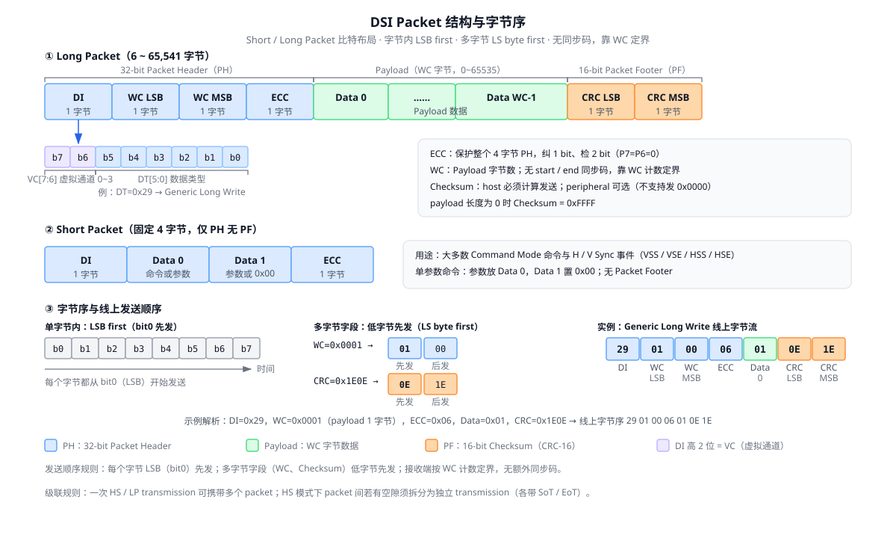
29 01 00 06 01 0E 1E。ECC（Hamming 修改码 (30,24)）
5+1 bit Hamming 修改码：纠 1 bit + 检 2 bit，保护 24 bit header 数据；header 固定 24 bit，P7 = P6 = 0。发送端 parity 方程（D0 = header 第 0 bit = DI 的 LSB，已用规范示例逐一复算验证）：
P7 = 0 P6 = 0 P5 = D10^D11^D12^D13^D14^D15^D16^D17^D18^D19^D21^D22^D23 P4 = D4^D5^D6^D7^D8^D9^D16^D17^D18^D19^D20^D22^D23 P3 = D1^D2^D3^D7^D8^D9^D13^D14^D15^D19^D20^D21^D23 P2 = D0^D2^D3^D5^D6^D9^D11^D12^D15^D18^D20^D21^D22 P1 = D0^D1^D3^D4^D6^D8^D10^D12^D14^D17^D20^D21^D22^D23 P0 = D0^D1^D2^D4^D5^D7^D10^D11^D13^D16^D20^D21^D22^D23
接收端 syndrome 纠错流程
- 计算 syndrome
S = 收到的 ECC ⊕ 对收到 24 bit 重算的 ECC； S = 0→ 无错；- S 命中 syndrome 矩阵（64 项，如 D0→
0x07、D1→0x0B、D2→0x0D、D3→0x0E、D4→0x13、D5→0x15、D6→0x16、D7→0x19…）→ 对应数据位取反纠正； - S 为单位矩阵行 → 错在 parity 位本身；
- S 无法识别 → multi-bit error，置 Multi-bit Error Flag（不可纠正）。
ECC 义务：host 永远生成并发送 ECC；peripheral 两个方向都要支持；host 还须能针对旧版不支持 ECC 的 peripheral 关闭 ECC 检查。
Checksum（CRC-16）
- 生成多项式
x^16 + x^12 + x^5 + x^0（0x1021，反射实现0x8408），初值0xFFFF，payload 按 LSB first 逐比特进入，算完后 CRC 低字节先发。只检错不纠错。
x^16+x^15+x^5+x^0，与正文矛盾，实测 x^12 版才能复现全部测试向量；
② §8.8.18 的 36-bit 示例 packet CRC 印为 0x1C4C，实算为 0xC1C4，疑为排版错误。
黄金测试向量（已独立复算吻合）
| 类别 | 输入 | 期望输出 |
|---|---|---|
| ECC | DI=0x37, WC=0x01F0 | 0x3F |
| ECC | DI=0x29, WC=0x0001 | 0x06 |
| ECC | EoTp header（08 0F 0F） | 0x01 |
| ECC | DI=0x0D, WC=0x0001 | 0x1E |
| ECC | DI=0x1D, WC=0x0001 | 0x0D |
| CRC-16 | 00 | 0x0F87 |
| CRC-16 | 01 | 0x1E0E |
| CRC-16 | 24 字节流 FF 00 00 00 1E F0 1E C7 4F 82 78 C5 82 E0 8C 70 D2 3C 78 E9 FF 00 00 01 | 0xE569 |
| 完整包 | 30bpp 单像素全 1 示例 packet | 0D 01 00 1E FF FF FF 3F B4 36 |
| 完整包 | EoTp 固定字节 | 08 0F 0F 01 |
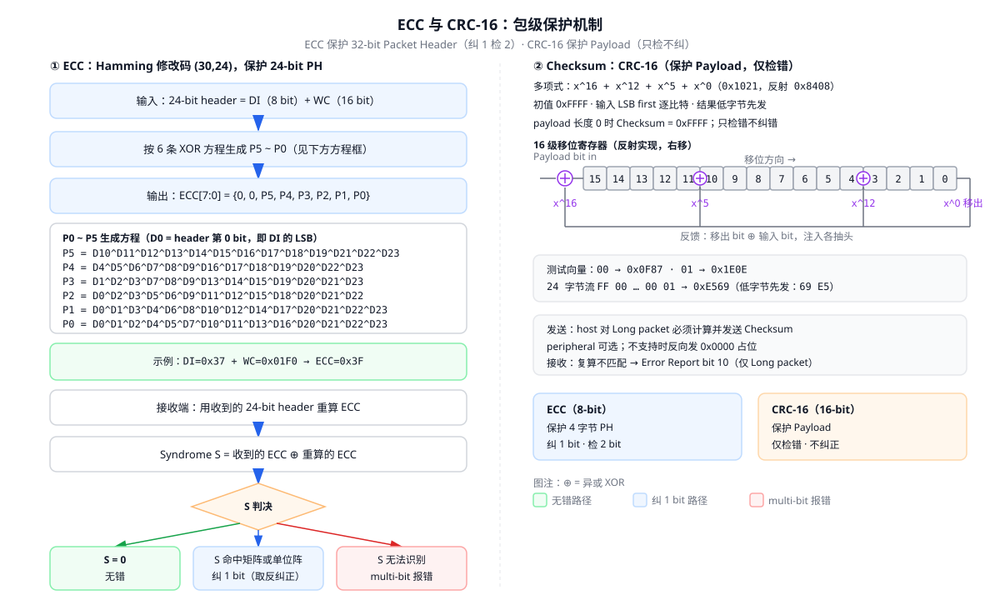
01→0x1E0E。06Data Type 编码 datatype
DT 编码约束
DT[3:0] = 0000 或 1111（即 0xX0、0xXF）禁止使用。原因：该编码约束保证每个 packet 前 4 bit 内至少有一次跳变——EoT 序列是全 1 或全 0，接收端可据此在 4 bit 内区分「新 packet 开始」与「EoT」。
Processor-sourced（host → peripheral）
Video Mode 同步 / 控制（均 Short）
| DT (hex) | DT (binary) | 含义 |
|---|---|---|
0x01 | 00 0001 | Sync Event, V Sync Start (VSS) |
0x11 | 01 0001 | Sync Event, V Sync End (VSE) |
0x21 | 10 0001 | Sync Event, H Sync Start (HSS) |
0x31 | 11 0001 | H Sync End (HSE) |
0x08 | 00 1000 | End of Transmission packet (EoTp) |
0x02 | 00 0010 | Color Mode (CM) Off Command |
0x12 | 01 0010 | Color Mode (CM) On Command |
0x22 | 10 0010 | Shut Down Peripheral Command |
0x32 | 11 0010 | Turn On Peripheral Command |
Command Mode 通用 / DCS
| DT (hex) | 含义 | 长度 |
|---|---|---|
0x03 / 0x13 / 0x23 | Generic Short WRITE，0 / 1 / 2 参数 | Short |
0x04 / 0x14 / 0x24 | Generic READ，0 / 1 / 2 参数 | Short |
0x05 / 0x15 | DCS Short WRITE，0 / 1 参数 | Short |
0x06 | DCS READ，无参数 | Short |
0x37 | Set Maximum Return Packet Size | Short |
0x09 | Null Packet, no data | Long |
0x19 | Blanking Packet, no data | Long |
0x29 | Generic Long Write | Long |
0x39 | DCS Long Write / write_LUT | Long |
像素流（均 Long，Video Mode）
| DT (hex) | 格式 |
|---|---|
0x0C | Loosely Packed Pixel Stream, 20-bit YCbCr 4:2:2 |
0x1C | Packed Pixel Stream, 24-bit YCbCr 4:2:2（每分量 12 bit） |
0x2C | Packed Pixel Stream, 16-bit YCbCr 4:2:2 |
0x0D | Packed Pixel Stream, 30-bit RGB 10-10-10 |
0x1D | Packed Pixel Stream, 36-bit RGB 12-12-12 |
0x3D | Packed Pixel Stream, 12-bit YCbCr 4:2:0 |
0x0E | Packed Pixel Stream, 16-bit RGB 5-6-5 |
0x1E | Packed Pixel Stream, 18-bit RGB 6-6-6（packed） |
0x2E | Loosely Packed Pixel Stream, 18-bit RGB 6-6-6（3 字节/像素） |
0x3E | Packed Pixel Stream, 24-bit RGB 8-8-8 |
0x3E = 24-bit RGB888、0x0E = RGB565、0x2E = 18-bit loosely packed（3 字节/像素）。与其他版本/资料交叉引用时务必核对。
EoTp（DT = 0x08）
- 固定格式：DT =
0b001000、VC 固定0b00、Payload =0x0F0F、ECC =0x01（线上固定字节08 0F 0F 01）；多 lane 时 EoTp 字节同样按 lane 分发。 - 作用：协议层标示 HS transmission 结束，与 PHY 层 EoT 序列解耦，增强鲁棒性；代价是每次 transmission 多 4 字节。
- 兼容性：v1.1 设备必须具备 EoTp 生成/检测能力，同时必须提供 enable/disable 手段兼容旧设备。HS 模式 shall 发送；LP 模式 should not 发送；接收端 HS/LP 都 shall 检测。
Peripheral-sourced（peripheral → host）
| DT (hex) | 含义 | 长度 |
|---|---|---|
0x02 | Acknowledge and Error Report | Short |
0x08 | EoTp | Short |
0x11 / 0x12 | Generic Short READ Response，返回 1 / 2 字节 | Short |
0x1A | Generic Long READ Response | Long |
0x1C | DCS Long READ Response | Long |
0x21 / 0x22 | DCS Short READ Response，返回 1 / 2 字节 | Short |
01 0001 / 01 0010，应为 10 0001 / 10 0010。
07Video Mode video
帧 / 行结构
- 一帧时间 =
tL × (VSA + VBP + VACT + VFP)；行时间tL = tHSA + tHBP + tHACT + tHFP。 - 每帧第一行以 VSS 开始；其余所有行以 VSE 或 HSS 开始。
- VSS 隐含「VSA 第一行的 HSS」；VSE 隐含「VSA 最后一行的 HSS」。
- 正常一行 RGB 用一个 packet 发完整 scanline；必要时一行可拆多个 packet，但单个像素不得跨包拆分。
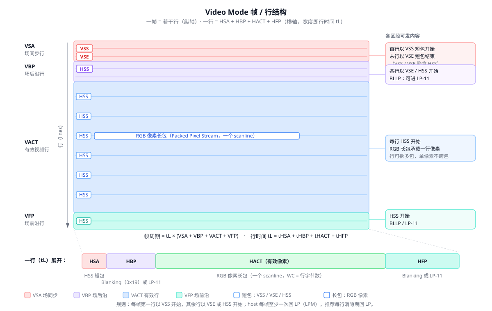
三种 packet sequence（host 必须全部支持；peripheral 至少支持一种）
| 模式 | 特点 | 外设要求 |
|---|---|---|
| Non-Burst with Sync Pulses | 精确重建 DPI 型时序：像素按 DPI 速率发送，sync 脉宽精确传递（每个 sync 发 Start+End 一对短包）；HSA/HBP/HFP 用 Blanking Packet（0x19）填充，时间充裕时可用定时 LP-11 代替以省电。 | 无需 line buffer，sync 精度最高 |
| Non-Burst with Sync Events | 简化版：每个 sync 只发 Start（单个 Sync Event），peripheral 自行重建脉宽；像素仍按 DPI 速率发。 | 无需 line buffer |
| Burst Mode | RGB 像素时间压缩成高速 burst 发出，每行腾出更多时间进 LP 省电或复用链路；burst 后总线可留 HS 发 blanking packet 或进 LP。若 peripheral 借此时段反向 LP 发送，其时长必须受限以免 line buffer underflow。 | 需要 line buffer，最省电 |
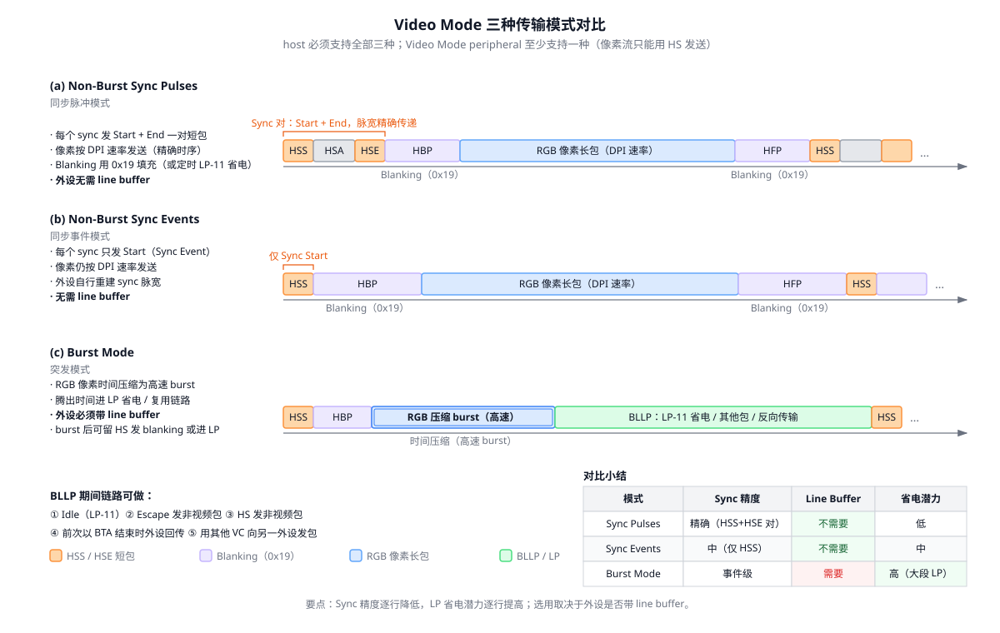
BLLP 与消隐规则
BLLP（Blanking or Low-Power Interval）期间链路可做 5 件事：
- 保持 Idle（LP-11）；
- Escape Mode 发非视频 packet；
- HS Mode 发非视频 packet；
- 前次传输以 BTA 结束时 peripheral 用 Escape Mode 回传；
- 用不同 VC ID 向另一 peripheral 发 packet。
- host 每帧至少应结束一次 HS 传输并回到 LP（LPM）；推荐每行水平消隐期都回一次 LP。
- HBP/HFP：peripheral 时序规格最小值为 0 时 Blanking Packet may 省略；最大值为 0 时 shall 省略。
外设时序参数（peripheral 厂商必须填写，host 必须满足）
| 参数 | 含义 | 单位 |
|---|---|---|
brPHY | 所有 lane 总比特率 | Mbps |
tL | 行时间 | s |
tHSA / tHBP / tHACT / tHFP | 行同步 / 后沿 / 图像数据 / 前沿时间 | s |
HACT | 每行有效像素数 | pixels |
VSA / VBP / VACT / VFP | 场同步 / 后沿 / 有效行 / 前沿行数 | lines |
08Command Mode 与双向传输 command
Generic / DCS 读写规则
- Generic Short WRITE（
0x03/0x13/0x23）：DT[5:4] 表参数个数；单参数时 Data1 =0x00。 - Generic READ（
0x04/0x14/0x24）：必须是 transmission 中唯一或最后一个 packet，之后 host 发 BTA。peripheral 响应：无错 → 返回 READ 数据；有错 → Acknowledge and Error Report；单 bit ECC 错已纠正 → READ 数据 + 追加 Error Report。返回数据超过 Set Maximum Return Packet Size 时须多次传输。 - DCS Short WRITE（
0x05/0x15）：DI 后第一字节即 DCS Command Byte。后随 BTA 时，双向 peripheral 无错回 ACK Trigger Message，有错回 Error Report；单向 Video Mode 模组忽略 BTA。 - DCS READ（
0x06）：规则同 Generic READ。 - DCS Long Write / write_LUT（
0x39）：DI + 2B WC + ECC + DCS Command Byte + (WC−1) 字节 payload + 2B Checksum。 - Set Maximum Return Packet Size（
0x37）：限定回传 Long packet 最大 payload；上电 / Reset 后默认值为 1；单向 peripheral 忽略。 - Null Packet（
0x09，Long）：让 Data Lane 保持 HS 发哑数据，peripheral 不捕获 payload，但 ECC/Checksum 照常生成。 - Blanking Packet（
0x19，Long）：承载消隐期时序；payload 可为任意数据。 - Color Mode On/Off（
0x12/0x02）：Video Mode 模组进入/退出低色彩省电模式。Shutdown Peripheral（0x22）：关显示省电（接口保持供电）；Turn On Peripheral（0x32）：恢复正常显示。
BTA 令牌机制
- BTA 是 token-passing：host 在 transmission 最后一个 packet 期间向 PHY 置
TurnRequest，PHY 在 EoT 后发 BTA；peripheral 获得总线后发一个或多个 packet，再以自己的TurnRequest还权。每次 peripheral→host transaction 之后都必须 BTA 还权。 - 反向只用 Lane 0 + LP Mode；反向 packet 结构与正向相同（peripheral 不算 Checksum 时 PF =
0x0000）。 - 带 BTA 的非 READ 命令 → 无错回 ACK Trigger（单字节
00100001，first-bit→last-bit），有错回 4 字节 Acknowledge and Error Report。 - peripheral→host 四类传输：TE Trigger、ACK Trigger、Acknowledge and Error Report、READ Response。
- Acknowledge and Error Report 固定打
VC = 0b00。
Tearing Effect（TE）上报完整流程
DSI 无 peripheral→host 中断能力，host 要么轮询（DCS get_scan_line），要么长期让出总线等 TE：
- host 发 DCS 命令
set_tear_on（以 DT=0x15发送；set_tear_scanline以 DT=0x39发送；set_tear_off关闭），该 transmission 以 BTA 结束，模组回普通 ACK 还权； - 要使能 TE 上报，host 必须在不附带任何 DSI 命令的情况下再次 BTA 让出总线；
- host 最多等待一个视频帧周期——期间 host 不能发任何新命令；
- TE 事件发生时模组：发 LP Escape Mode 序列 → 发 TE Trigger 字节
01011101（first-bit→last-bit）→ 还权 host。该 Trigger 为 TE 专用。
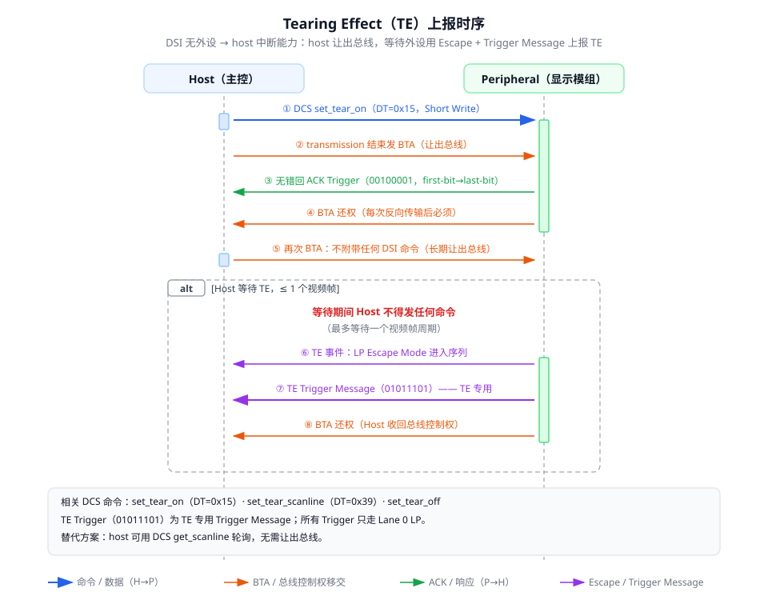
09错误处理与争用 error
6 类低层协议错误（PHY 检测，peripheral 存为状态位）
| # | 错误 | 说明 |
|---|---|---|
| 1 | SoT Error | 前导序列单 bit 错容错，检出后可继续但数据可信度降低。 |
| 2 | SoT Sync Error | 前导损坏到无法同步，不得执行任何 WRITE。 |
| 3 | EoT Sync Error | EoT 时最后一字节不对齐字节边界。 |
| 4 | Escape Mode Entry Command Error | Escape 进入命令不被识别。 |
| 5 | LP Transmission Sync Error | LP 传输结束数据未对齐字节边界。 |
| 6 | False Control Error | LP-10 后无合法 escape/turnaround 序列，或 LP-01 后无 LP-00 bridge。 |
Acknowledge and Error Report packet（DT = 0x02，4 字节 Short）
格式：Byte0 = DI（VC + 0x02）、Byte1 = Error Report bits 0–7、Byte2 = bits 8–15、Byte3 = ECC。固定打 VC = 0b00。
| Bit | 含义 | Bit | 含义 |
|---|---|---|---|
0 | SoT Error | 8 | ECC Error, single-bit（已纠正） |
1 | SoT Sync Error | 9 | ECC Error, multi-bit |
2 | EoT Sync Error | 10 | Checksum Error（仅 Long packet） |
3 | Escape Mode Entry Command Error | 11 | DSI Data Type Not Recognized |
4 | Low-Power Transmit Sync Error | 12 | DSI VC ID Invalid |
5 | Peripheral Timeout Error | 13 | Invalid Transmission Length |
6 | False Control Error | 14 | Reserved |
7 | Contention Detected | 15 | DSI Protocol Violation |
错误累积 — 上报 — 清零机制
- 错误跨多次传输累积，直到某次 BTA 统一上报，上报后 Error Register 全部清零；每次 BTA 只回一个 ACK 或一个 Error Report。
- 遇到不识别 Data Type 或 multi-bit ECC 错后，接收端失去包界，从出错点丢弃该次 transmission 剩余全部内容。
响应规则矩阵
| 检出情况 | 响应 |
|---|---|
| 单 bit ECC 错已纠正（READ） | 照常回 READ 数据 + 追加 Error Report（bit 8） |
| multi-bit ECC 错 | 不执行命令，只回 Error Report（bit 9） |
| SoT / SoT Sync / VC invalid / 协议违规 / 命令不识别 | 只回 Error Report（对应 bit） |
| EoT Sync / LP Sync / Checksum 错 | 只回 Error Report（对应 bit） |
定时器
| 定时器 | 含义 | 约束 |
|---|---|---|
HRX_TO | peripheral HS RX 超时 | 必需 |
HTX_TO | host HS TX 超时 | 必需，应比 HRX_TO 长 |
LTX-P_TO | peripheral LP TX 占线超时 | 必需 |
LRX-H_TO | host LP RX 超时 | 必需，须 > LTX-P_TO |
TA_TO | Turnaround 超时 | 可选 |
PR_TO | Peripheral Reset 等待 | 可选（host 发 Reset Entry command 后等待复位完成） |
PRESP_TO | peripheral 响应超时 | 可选，分 BTA / LPDT READ / LPDT WRITE / HS READ / HS WRITE 五种取值 |
- peripheral 检出
HRX_TO或LTX-P_TO超时 → Error Report 置 Peripheral Timeout Error（bit 5）。
争用（Contention）与恢复
- 双方同时驱动总线时，LP-CD 检测 LP High Fault / LP Low Fault；检出错 → 置 Contention Detected（bit 7）。
- common-mode fault 无法被 LP-CD 区分，只能靠定时器（timeout）恢复。
10像素格式 pixel
通用规则
- 分量顺序 R→G→B；YCbCr 按 BT.656：
Cb、Y、Cr、Y；分量内 LSB 先发。 - 标清用 BT.601、高清用 BT.709 色彩空间；30/36 bpp 用 sRGB 色彩空间。
- 行内像素不足打包对齐要求时按 fill pixel 规则补齐（见下表）。
打包格式表
| DT | 格式 | 字节排列要点 | WC 约束 |
|---|---|---|---|
0x0E | RGB 5-6-5（16bpp） | 2 字节/像素：byte0 = {G[2:0],R[4:0]}、byte1 = {B[4:0],G[5:3]} | 行宽 2 字节倍数 |
0x1E | RGB 6-6-6 packed（18bpp） | 4 像素 = 9 字节紧凑位流 | 行宽 4 像素倍数，不足补 fill pixel |
0x2E | RGB 6-6-6 loosely packed | 3 字节/像素，每字节有效位 [7:2]，[1:0] 忽略 | 行宽 3 字节倍数 |
0x3E | RGB 8-8-8（24bpp） | 3 字节/像素：byte0 = R、byte1 = G、byte2 = B | 行宽 3 字节倍数 |
0x0D | RGB 10-10-10（30bpp） | 4 像素 = 15 字节；示例单像素全 1 packet = 0D 01 00 1E FF FF FF 3F B4 36 | 行宽 15 字节倍数 |
0x1D | RGB 12-12-12（36bpp） | 2 像素 = 9 字节 | — |
0x0C | YCbCr 4:2:2 20bpp loosely | 每分量 10 bit 放 12 bit 字段；2 像素 = 6 字节 | WC 必须非零且 6 的倍数 |
0x1C | YCbCr 4:2:2 24bpp | 每分量 12 bit；2 像素 = 6 字节 | WC 6 的倍数 |
0x2C | YCbCr 4:2:2 16bpp | 每分量 8 bit；2 像素 = 4 字节，Cb0 Y0 Cr0 Y1 | WC 4 的倍数 |
0x3D | YCbCr 4:2:0 12bpp | 奇数行发 Cb+Y、偶数行发 Cr+Y；2 像素 = 3 字节 | WC 3 的倍数 |
合规要求
- Video Mode host 必须实现 4 种：16bpp、18bpp packed、18bpp loosely packed、24bpp；peripheral 至少一种。
- 合规分辨率清单：QQVGA 160×120、QCIF 176×144、QCIF+ 176×208/220、QVGA 320×240、CIF 352×288、CIF+ 352×416/440、(1/2)VGA 320×480、(2/3)VGA 640×320、VGA 640×480、WVGA 800×480、SVGA 800×600、XVGA 1024×768。
11数字验证视角 dv
本章把前文协议点转化为可执行的验证清单：monitor/checker 检查点、错误注入场景矩阵、覆盖率建议与黄金参考模型要点。
Monitor / Checker 检查点清单
PHY 层（D-PHY）
- SoT 序列完整：
LP-11→LP-01(TLPX)→LP-00(THS-PREPARE)→HS-0(THS-ZERO)→Sync 00011101 - RX 锁定 Leader
011101的单比特容错行为 - EoT：末位翻转 +
THS-TRAIL→LP-11(THS-EXIT) - Escape 进入序列与 8 个 entry command 译码（
0x87/0x78/0x46/0xBA…） - Spaced-One-Hot：每 Mark 后必跟 Space；退出前最后相位为不带 Space 的 Mark-1
- ULPS 进出：Space 保持 → Mark-1 持续
TWAKEUP = 1 ms→ LP-11（含 Clock Lane ULPS） - BTA 五步时序：
TTA-GO = 4·TLPX、TTA-SURE ∈ [1,2]·TLPX、TTA-GET = 5·TLPX，且令牌必须归还 - Clock Lane：
TCLK-PRE ≥ 8 UI、TCLK-POST ≥ 60 ns + 52·UI、TCLK-MISS ≤ 60 ns - Table 14 全集时序参数（TLPX ≥ 50 ns、THS-PREPARE/ZERO/SETTLE/SKIP/TRAIL 等 min/max）
TINIT ≥ 100 µs初始化 LP-11- >1.5 Gbps 时 deskew 序列存在性：全 1 sync 16 UI +
0101…pattern，initial ≥ 2^15 UI / periodic ≥ 2^10 UI - DDR 正交关系：时钟上升沿落在数据比特中心；第一个 payload bit 期间必有时钟上升沿
协议层（DSI）
- header 4 字节重组：DI = VC[7:6] + DT[5:0]、WC、ECC
- ECC 复算（P0~P5 方程）与 syndrome 分类：无错 / 纠 1 bit / parity 错 / multi-bit
- CRC-16 复算（多项式
0x1021反射0x8408、初值0xFFFF、低字节先发；payload 长度为 0 时期望0xFFFF） - WC 定界：按 WC 数完 payload 后恰遇 CRC footer；无同步码依赖
- DT 合法性：
DT[3:0]禁0000/1111；DT 与方向（processor/peripheral-sourced）匹配 - VC 合法性与 VC 交织下的包序
- lane 分发 round-robin 与 lane 合并后的字节序还原；各 lane 同时 SoT、独立 EoT
- EoTp：HS transmission 末尾存在
08 0F 0F 01（VC=0），LP 模式 should not 出现 - READ 为唯一/最后一个 packet 且后随 BTA；一次 transmission 至多一个需响应 packet
- 反向只用 Lane 0 + LP；ACK Trigger
00100001、TE Trigger01011101字节序 - Set Maximum Return Packet Size 上电默认 1；超限时 READ 分多次传输
- Error Report 固定 VC=0；上报后 Error Register 清零
- Video Mode：VSS 起帧、VSE/HSS 起行、单像素不跨包、每帧至少一次回 LP
- 像素包 WC 约束（各格式的倍数要求）与 fill pixel
错误注入场景矩阵
| 注入场景 | 注入方式 | 期望行为 / 上报 |
|---|---|---|
| SoT Error | SoT 前导中翻 1 bit（Leader 内单比特错） | 容错继续接收，数据可信度降低；Error Report bit 0 |
| SoT Sync Error | 破坏前导至无法锁定 011101 | 不得执行任何 WRITE；Error Report bit 1 |
| EoT Sync Error | 使 EoT 时末字节不对齐字节边界 | 只回 Error Report bit 2 |
| Escape Entry Command Error | 发不在 Table 8 中的 entry command | 命令被忽略并等待 Stop；Error Report bit 3 |
| LP Transmit Sync Error | LPDT 数据截断至非字节边界结束 | 只回 Error Report bit 4 |
| False Control Error | LP-10 后不给合法 escape/turnaround 序列（或 LP-01 后无 LP-00） | Error Report bit 6 |
| ECC single-bit（READ） | header 24 bit 中任翻 1 bit（逐位遍历） | syndrome 命中矩阵 → 纠正；READ 照常回数据 + 追加 Error Report bit 8 |
| ECC single-bit（parity） | ECC 字节自身翻 1 bit | syndrome 命中单位矩阵行 → 判 parity 位错，数据可信 |
| ECC multi-bit | header 翻 ≥2 bit | 不执行命令，只回 Error Report bit 9；失去包界，丢弃剩余 transmission |
| Checksum Error | Long packet payload 翻 bit 或 CRC 域篡改 | 只回 Error Report bit 10 |
| 非法 DT | 发 DT[3:0]=0000/1111 或未定义编码 | Error Report bit 11；失去包界 |
| VC invalid | 发超出配置范围的 VC ID | Error Report bit 12 |
| Invalid Transmission Length | WC 与实际 payload 字节数不符 | Error Report bit 13 |
| Peripheral Timeout | HS burst 中途停发触发 HRX_TO；或 LP 占线超 LTX-P_TO | Error Report bit 5 |
| Contention | host 未等 BTA 完成即驱动（模拟双向同时驱动） | LP-CD 检出 High/Low Fault → Error Report bit 7；common-mode fault 靠定时器恢复 |
| Protocol Violation | READ 非末位、一次 transmission 两个需响应 packet 等 | Error Report bit 15 |
覆盖率建议
- DT 全编码 × VC(0–3) × 包长边界：WC = 0 / 1 / 65535，Short/Long 全覆盖，含 EoTp、Null、Blanking。
- 三种 Video Mode（Sync Pulses / Sync Events / Burst）× 像素格式全集（10 种 DT）× lane 数 1/2/3/4。
- lane 结束错位：总字节数 % N == 0 / ≠ 0 的各 lane EoT 错位组合。
- BTA 回环：READ（0/1/2 参数）、带 BTA 的 WRITE、TE 全流程（含无条件 BTA 后等一帧）。
- ULPS 进出：Data Lane + Clock Lane，含 ULPS 回 HS 后 deskew 可选分支。
- deskew 序列：initial / periodic / ≤1.5 Gbps 无 deskew 三档。
- ECC/CRC 边界：payload 长度 0（CRC =
0xFFFF）、peripheral 不算 CRC 时 PF =0x0000占位。 - 时序档位：Table 14 各参数 min / typ / max 角点；TINIT / TWAKEUP 边界。
黄金参考模型要点
- ECC：实现 P0~P5 异或方程（
P7=P6=0），内置 64 项 syndrome 表（D0→0x07起）做单比特纠错与 multi-bit 判定；用 5 组黄金向量自检（0x37/0x01F0→0x3F等）。 - CRC-16：反射算法——多项式反射
0x8408、初值0xFFFF、payload LSB first 逐比特进入、结果低字节先发；用 3 组向量自检（00→0x0F87、01→0x1E0E、24 字节流→0xE569）。 - lane 分发：round-robin（byte i → Lane (i mod N)），各 lane 同时 SoT、按
ceil/floor(total/N)字节数独立 EoT；merger 侧按同规则还原并校验包界。 - 包解析：靠 WC 定界，遇非法 DT 或 multi-bit ECC 即丢包界、丢弃剩余 transmission，与 DUT 行为逐拍对齐。
# Reference model skeleton (Python, self-check with golden vectors) def dsi_ecc(h24): # h24: 24-bit header int, D0 = LSB of DI d = [(h24 >> i) & 1 for i in range(24)] def x(*idx): return __import__('functools').reduce(int.__xor__, (d[i] for i in idx)) p5 = x(10,11,12,13,14,15,16,17,18,19,21,22,23) p4 = x(4,5,6,7,8,9,16,17,18,19,20,22,23) p3 = x(1,2,3,7,8,9,13,14,15,19,20,21,23) p2 = x(0,2,3,5,6,9,11,12,15,18,20,21,22) p1 = x(0,1,3,4,6,8,10,12,14,17,20,21,22,23) p0 = x(0,1,2,4,5,7,10,11,13,16,20,21,22,23) return (p5<<5)|(p4<<4)|(p3<<3)|(p2<<2)|(p1<<1)|p0 # P7=P6=0 def crc16_dsi(data): # reflected 0x8408, init 0xFFFF, LSB-first per byte crc = 0xFFFF for b in data: crc ^= b for _ in range(8): crc = (crc >> 1) ^ 0x8408 if crc & 1 else crc >> 1 return crc # transmit low byte first assert dsi_ecc(0x01F037) == 0x3F # DI=0x37, WC=0x01F0 assert dsi_ecc(0x000129) == 0x06 # DI=0x29, WC=0x0001 assert crc16_dsi(bytes([0x00])) == 0x0F87 assert crc16_dsi(bytes([0x01])) == 0x1E0E assert crc16_dsi(bytes.fromhex('FF0000001EF01EC74F8278C582E08C70D23C78E9FF000001')) == 0xE569
12附录 appendix
术语表
| 术语 | 含义 |
|---|---|
HS | High-Speed 模式，差分高速传输，仅 Forward 方向 |
LP | Low-Power 模式，单端低功耗传输，可双向 |
SoT / EoT | Start / End of Transmission，HS burst 的起止序列，均以 LP-11 界定 |
BTA | Bus Turnaround，总线方向翻转的令牌传递机制 |
ULPS | Ultra-Low Power State，超低功耗态（Escape 命令 0x78 进入） |
LPDT | Low-Power Data Transmission，Escape 模式下的低功耗数据传输 |
EoTp | End of Transmission packet（DT=0x08），协议层标示 HS transmission 结束 |
BLLP | Blanking or Low-Power Interval，消隐或低功耗区间 |
DCS | Display Command Set，Command Mode 命令集 |
DPI / DBI | Display Pixel / Bus Interface，并行像素 / 命令接口（Video Mode 像素格式取自 DPI-2） |
TE | Tearing Effect，外设上报的撕裂效应事件 |
VC | Virtual Channel，DI[7:6] 标识，最多 4 个 |
PLL | Clock Multiplier Unit，PHY 外部高频时钟源 |
PPI | PHY-Protocol Interface，协议层与 PHY 的对接接口 |
CIL | Control and Interface Logic，Lane Module 内的控制与接口逻辑 |
DI / WC / ECC / CRC | Data Identifier / Word Count / 纠错码（Hamming (30,24)）/ 16-bit 校验和 |
UI | Unit Interval，一个串行比特时间 |
SSC | Spread Spectrum Clocking，扩频时钟（>2.5 Gbps 必须可用） |
规范引用清单（DSI v1.1 §3 / D-PHY v2.0 §3）
- MIPI Alliance Specification for DCS（Display Command Set）
- MIPI Alliance Specification for DBI-2（Display Bus Interface v2）
- MIPI Alliance Specification for DPI-2（Display Pixel Interface v2）
- MIPI Alliance Specification for D-PHY（DSI v1.1 引用 v1.1；D-PHY v2.0 引用 v1.0、C-PHY v1.0）
- MIPI Alliance Specification for SDF（Stereoscopic Display Format）
- CEA-861-E；ITU-R BT.601 / BT.656 / BT.709
资料来源声明
C:\Users\xiapeng2\Desktop\MIPI）：
mipi-DSI-specification-v1.1.pdf— DSI v1.1 全文（5323 行通读，ECC/CRC 示例数值经 Python 独立复算验证）mipi_d-phy_specification_v2-0.pdf— D-PHY v2.0 全文（7939 行通读）
- JD9165BA 数据手册
- MIPI DSI 相关协议介绍.pptx
- MIPI High speed interface.ppt
- MIPI_DBI_Specification_v2.pdf
- D-PHY v1.0 规范
- D-PHY v1.2 规范
- mipi_dsi_svt_uvm_user_guide.pdf